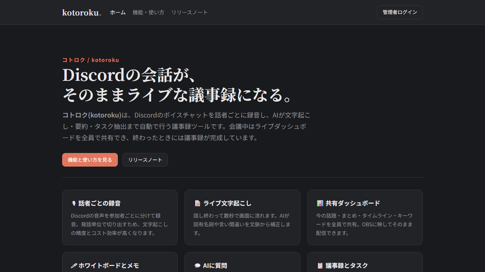
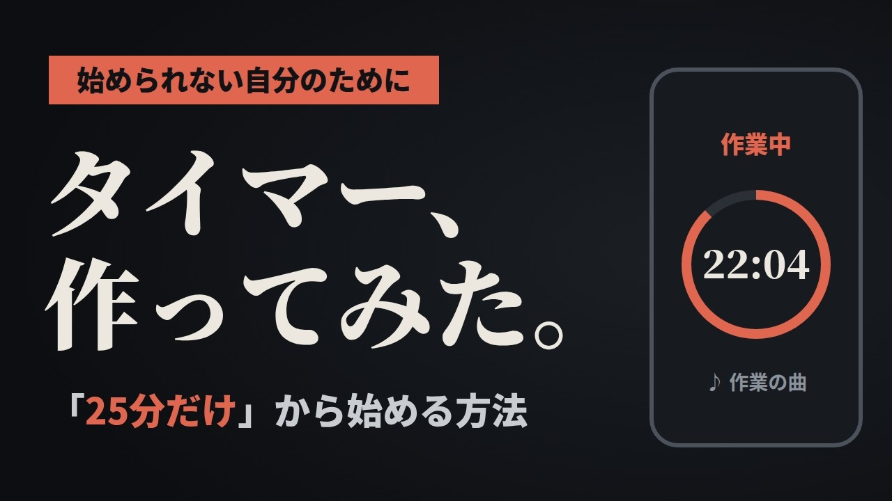
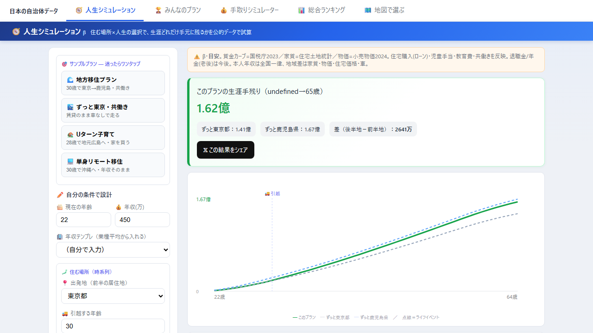
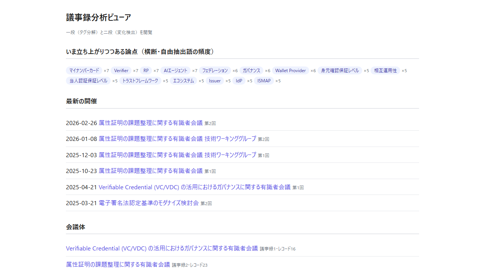
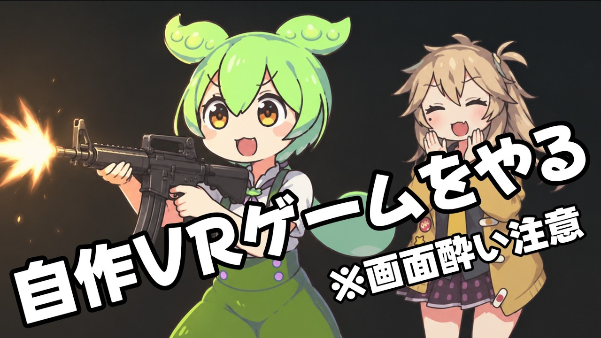
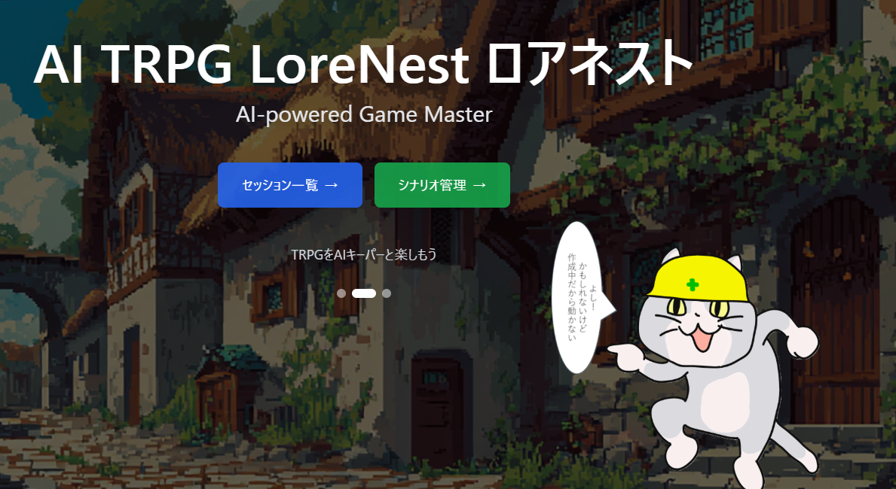
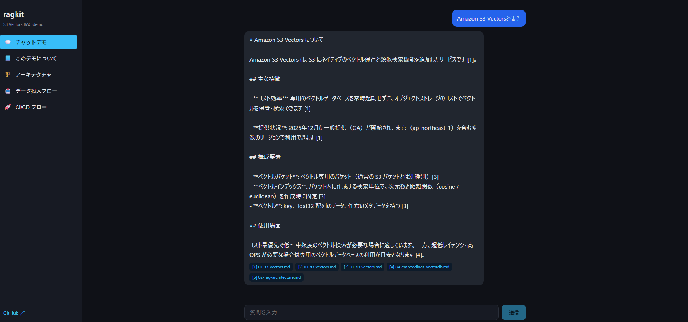
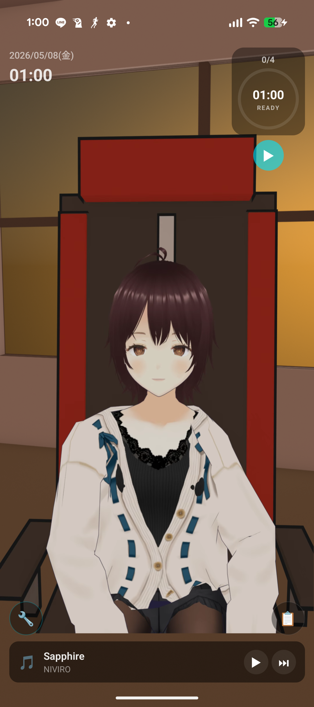

works — 作ったもの

WEB#008 / 2026
議事録生成AI コトロク
Discordの会話がそのままライブな議事録になる。話者ごとに録音し、AIが文字起こし・要約・タスク抽出。

ANDROID#007 / 2026
シヴツール
睡眠アラーム・作業タイマー・AIの相棒。動画で扱った「使える知識」を道具にして貯めていくアプリ。

WEB#006 / 2026
人生シミュレーター
公的統計データから「どこに住むと生涯いくら手元に残るか」を試算。47都道府県の手残りランキングも。

WEB#005 / 2026
議事録分析プラットフォーム
政府の公開議事録をLLMで論点単位に構造化し、回をまたぐ変化を出典リンク付きで可視化。週次で自動更新。

VR#004 / 2026
VRウェーブディフェンス
Meta Quest向け。迫る敵を銃で迎撃し、ウェーブ間には強化カードやタレットを「撃って」選ぶ一人称防衛ゲーム。

WEB#003 / 2025
AI TRPG LoreNest
AIがゲームキーパーを務めるTRPG。ブラウザからアクセスするだけで、AIが生成するシナリオの中で冒険できる。

WEB#002 / 2025
クラウドLLM RAGアプリ
資料を事前に読み込ませてRAGで問い合わせできるデータ活用Webアプリ。ドキュメントに基づいた回答を返す。

ANDROID#001 / 2024
作業トモ
うるさい環境でも集中できるポモドーロタイマー。一緒に作業している感覚で集中を維持する。
about
シヴィルドット — 個人でアプリの開発やWebページの作成をしています。解説動画で扱った知識を、そのまま動くツールにしてアプリに積んでいくのが最近のテーマです。
stack: TypeScript / Python / C# · Cloudflare Workers / AWS · Claude / Gemini API · Unity